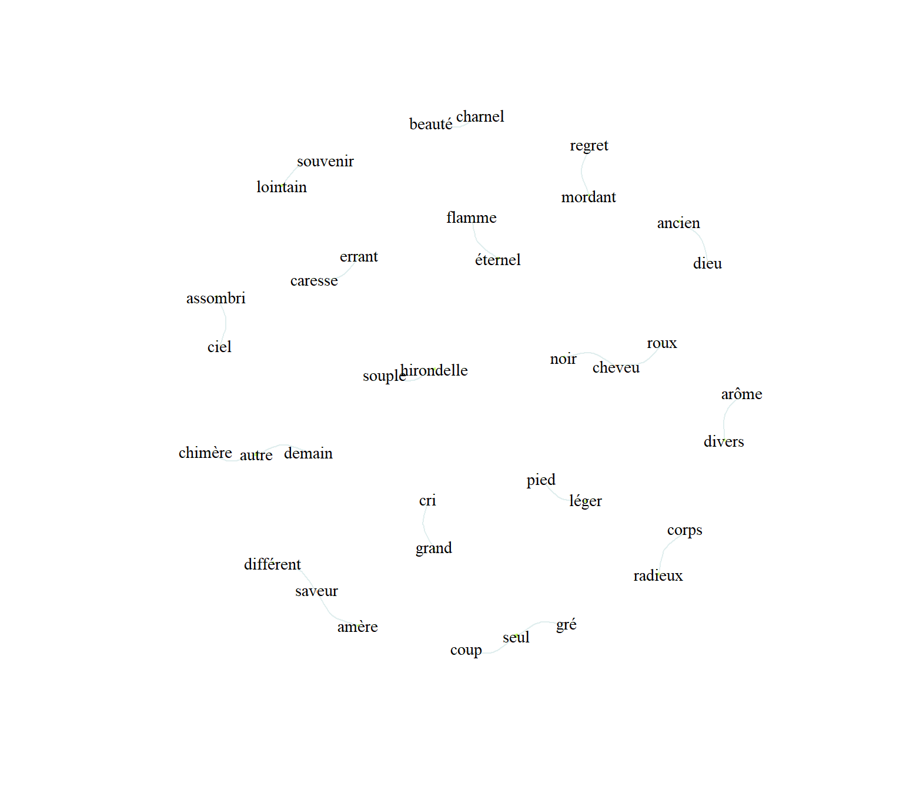

Chapter 9 Annotations lexicales et syntaxiques
Pour aller au-delà de l’analyse du seul lexique et de l’analyse de la cooccurence des termes à travers les textes, comme le font les méthodes de typologie et d’analyse factorielle des correspondance depuis longtemps, il est néçessaire d’analyser le texte en tenant compte de ses propriétés syntaxiques. Depuis une dizaine d’années, des outils puissants, les annotateurs, sont proposés de manière accessible.
Les plus connus sont Spacy, Stanford NLP et désormais UDpipe.
Dans l’environnement r différentes ressources sont disponibles : Quanteda, clean_nlp, Udpipe, …
Ils sont disponibles désormais dans de nombreuses langues même si la richesse et la précision obtenues varient d’une langue à l’autres
Ils s’appuient sur des corpus plus ou moins étendus et spécialisés d’annotations manuelle : les Treebanks.
Ils réalisent souvent plusieurs tâches dont les principales sont les suivantes :
- Tokeniser
- Lemmatiser
- Identifier les parts of speech
- Identifier les dépendances syntaxiques
- Identifier les entités nommées.
- identifier les co-reférence
9.1 Tokenization
9.1.1 Les niveaux de tokenisation
Un token est une unité d’analyse dont la granularité est plus ou moins fine
- Le paragraphe est sans l’unité l’unité la plus générale, quand un texte est correctement rédigé, un paragraphe développe une idée.
- La phrase est l’unité de langage, lui correpond un argument, une proposition. L’usage du point suivi d’un espace est assez général pour les identifier. C’est l’objet de tokenizers qui feront mieux en analysant le contexte de la phrase pour décider plus précisément si le point sépare bien deux phrase distinctes. Cette unité de phrase elle essentielle.
- Le mot est la fois le niveau le plus évident et le plus courant.
- On peut aussi souhaiter extraire d’un mot les suffixe et préfixe
- On peut pour certains problème descendre au niveau de la syllabe et donc du phonème.
- La lettre reste l’unité insécable.
9.1.2 Un exemple en tidytext
9.2 Stemmatisation, lemmatisation et synonymisation
Les mots prennent des formes variées, il peut être intéressant dans certains cas de réduire cette variété et ne considérer que l’idée des mots. Deux techniques sont disponibles
9.2.1 la stemmatisation
c’est un
9.2.2 la lemmatisation
Un lemme est un mot racine, sans inflexions de genre, de nombre ou de conjugaison. C’est généralement celui qu’on trouve dans les dictionnaire.
9.2.3 Synonymisation
le cas de wordnet et l’invention des synset
synonymes, antonymes, hipponyne, hyperonymes…..
https://cran.r-project.org/web/packages/wordnet/vignettes/wordnet.pdf
9.3 Part of Speech (POS)
Dans une phrase les mots n’on pas la même valeur. Certains sont des nombres propres, ils se réfèrent à ce que nous venons de voir, c’est à dire des entitées nommées, d’autres désignent des catégories d’objet. Ce sont les noms communs qui se rapportent à des catégories de choses. Un marteau - si j’en avais un - peut être n’importe quel marteau, la masse qui casse la pierre, ou ce petit marteau qui me permet d’enfoncer un clou dans le cadre du tableau.
Des typologies universelles ont été construites, elles recouvrent des typologies plus spécifiques à certaines langues. Les désinences du latin ont par exemple disparu du français. Cette forme est spécifiques au latin, on la retrouvera en allemand. La notion de morphosntaxique désigne présisément que les variations de formes des mots dépendent d’une règle syntaxique. Prenons le verbe, et sa forme, “être”, dont la forme au passé simple est “était”. La forme des mots change, mais l’idée reste.
Une catégorisation en 17 éléments est proposée. En voici les éléments et les définitions
Un petit exemple avec le package UDpipe.
library(udpipe)
fr <- udpipe_download_model(language = "french")
udmodel_french <- udpipe_load_model(file = "french-gsd-ud-2.5-191206.udpipe")
Citations <- read_csv("Citations.csv")
Flaubert<-Citations %>%
filter(doc==1)
UD <- udpipe_annotate(udmodel_french, x=Flaubert$text)
x <- as.data.frame(UD)
foo<-x %>%
select(doc_id,paragraph_id, sentence_id, token_id,token,lemma,head_token_id, upos,feats)%>%filter(sentence_id==1)
flextable(foo)doc_id | paragraph_id | sentence_id | token_id | token | lemma | head_token_id | upos | feats |
doc1 | 1 | 1 | 1 | Le | le | 2 | DET | Definite=Def|Gender=Masc|Number=Sing|PronType=Art |
doc1 | 1 | 1 | 2 | lendemain | lendemain | 9 | NOUN | Gender=Masc|Number=Sing |
doc1 | 1 | 1 | 3 | fut | être | 9 | AUX | Mood=Ind|Number=Sing|Person=3|Tense=Past|VerbForm=Fin |
doc1 | 1 | 1 | 4 | , | , | 6 | PUNCT | |
doc1 | 1 | 1 | 5 | pour | pour | 6 | ADP | |
doc1 | 1 | 1 | 6 | Emma | Emma | 9 | PROPN | |
doc1 | 1 | 1 | 7 | , | , | 6 | PUNCT | |
doc1 | 1 | 1 | 8 | une | un | 9 | DET | Definite=Ind|Gender=Fem|Number=Sing|PronType=Art |
doc1 | 1 | 1 | 9 | journée | journée | 0 | NOUN | Gender=Fem|Number=Sing |
doc1 | 1 | 1 | 10 | funèbre | funèbre | 9 | ADJ | Gender=Fem|Number=Sing |
doc1 | 1 | 1 | 11 | . | . | 9 | PUNCT |
Les trois première colonnes identifient le document, les phrases et les mots. Des lemmes sont proposées. La colonne UPOS donne les part of Speech universel.
9.4 Dépendances syntaxiques
C’est à Lucien Tesnière que l’on doit l’idée de la grammaire de la dépendance qui est au coeur du NLP moderne. L’idée est de déterminer au niveau de la phrase les relations entre ses termes de manière hierarchisée selon un principe de gouvernant à subordonné.
Verdelhan-Bourgade (2020) résume son analyse de manière précise et concise :
- “Tous les mots n’ont pas le même statut. Les mots pleins, qui « expriment directement la pensée » (p. 59), relèvent de quatre catégories structurales : les substantifs (notés par O), les adjectifs (A), les verbes (I), les adverbes (E). Les mots dits vides (souvent désigné de manière pratique par les stopwords aujourdh’ui) précisent le sens des autres, ou servent à marquer des relations.La connexion établit la relation entre mot régissant et mot subordonné. Lorsqu’un régissant commande un subordonné, cela constitue un nœud, qui peut se faire à partir d’une des quatre espèces de mots pleins”.
Il en donne l’exemple suivant : « Très souvent mon vieil ami chante cette fort jolie chanson à ma fille » où l’on peut repèrer:
- un nœud verbal, central, qui commande des actants (ami, chanson, fille) et des circonstants (souvent). La valence est « le nombre de crochets par lesquels un verbe peut attraper des actants », à peu près équivalente à « voix ».
- les nœud substantivaux (ami, chanson, fille), qui commandent des compléments (mon, vieil, cette, jolie, ma)
- le nœud adjectival (jolie) qui commande ici le subordonné ‘fort’
- le nœud adverbial, très’ étant subordonné à ‘souvent’. "

9.4.1 Arbre syntaxique
L’arbre syntaxique est obtenue en analysant les relations entre les termes. Nous poursuivons avec UPpipe, l’annovation précédente a déjà fait le travail. A chaque mot deux informations sont associée : la première est l’index du mot auxquel il se rapporte, la seconde est la nature de la relation.
Onn utilise ici une fonction écrite par (bnosac](http://www.bnosac.be/index.php/blog/93-dependency-parsing-with-udpipe) pour donner une représentation graphique de l’arbre.
plot_annotation <- function(x, size = 3){
stopifnot(is.data.frame(x) & all(c("doc_id","paragraph_id", "sentence_id", "token_id","token","lemma","head_token_id", "upos","feats", "dep_rel") %in% colnames(x)))
x <- x[!is.na(x$head_token_id), ]
x <- x[x$sentence_id %in% min(x$sentence_id), ]
edges <- x[x$head_token_id != 0, c("token_id", "head_token_id", "dep_rel")]
edges$label <- edges$dep_rel
g <- graph_from_data_frame(edges,
vertices = x[, c("token_id", "token", "lemma", "upos", "xpos", "feats")],
directed = TRUE)
ggraph(g, layout = "linear") +
geom_edge_arc(ggplot2::aes(label = dep_rel, vjust = -0.20),
arrow = grid::arrow(length = unit(4, 'mm'), ends = "last", type = "closed"),
end_cap = ggraph::label_rect("wordswordswords"),
label_colour = "red", check_overlap = TRUE, label_size = size) +
geom_node_label(ggplot2::aes(label = token), col = "darkgreen", size = size, fontface = "bold") +
geom_node_text(ggplot2::aes(label = upos), nudge_y = -0.35, size = size) +
labs(title = "Tokenisation, PoS & dependency relations")
}
plot_annotation(x, size = 3)Figure 9.1: arbre de dépendance
9.4.2 Vers des application plus générale
Dans la phrase precédente on note que funèbre est l’adjectif de journée. On peut être tenté de retrouver ces relations qui caractérisent des choses (les “nouns” ou noms choses) à des adjectifs. On souhaite faire une liste de ces paires.
L’exemple va être court : un poème de Maupassant
Maupassant<-Citations %>%
dplyr::filter(doc==2)
UD <- udpipe_annotate(udmodel_french, x=Maupassant$text)
foo <- as.data.frame(UD)
foo<- foo %>% select(paragraph_id,sentence_id, token_id,lemma,upos,head_token_id,dep_rel)%>%
mutate(key1=paste0(paragraph_id,sentence_id, token_id),key2=paste0(paragraph_id,sentence_id, head_token_id) )On va donc construires un tableau lemme_cible x lemmes_associés, les premiers risqueront d’êtres les noms communs, les seconds leurs adjectifs.
# selection de la relation.
res <- foo %>% filter(dep_rel == "amod")
#on y joint les dependences
dep<-res %>% left_join(foo, by = c("key2" = "key1"))
#on construit la tables des relations lemmes cibles -adjectifs
table<-as.data.frame.matrix(table(dep$lemma.x, dep$lemma.y))
#table$n<-rowSums(table)
#table$adj<-rownames(table)
#row.names(table) <- table$adjle tableau obtenu est en fait la structure d’un graphe bipartite. la représentation passe par un de igraph avec pour paramètres importants :
* Taille des arcs (edge) : est proportionnelle à la force du lien ( nombre de relations)
* Taille des noeud : proportiennel au rangs du noeud.
* Couleur et forme des noeuds : lemme et lemme cible.
* Un algorithme de force de Fruchterman and Reingold (1991) est employé pour représenter les positions relatives des mots et minimiser les superpositions.
Dessiner le réseau
## IGRAPH c09c0d5 UNWB 36 20 --
## + attr: type (v/l), name (v/c), weight (e/n)#E(bg)$weight# See the vertex attributes
#V(bg)$type
#V(bg)$name
# Plot the network
shape = ifelse(V(bg)$type, "circle", "square") # assign shape by node type
col = ifelse(V(bg)$type, "peachpuff", "darkolivegreen1") # assign color by node type
plot(bg, vertex.shape = shape, vertex.label.cex=.9,vertex.label.color="black",vertex.color = col,edge.color="azure2",vertex.frame.color=col,vertex.label.family="TT Arial", vertex.size=0.5*igraph::degree(bg),layout=layout_with_fr,edge.width=1*E(bg)$weight,edge.curved=0.5)
9.5 reconnaissance d’entités nommées
En français courant les entités nommées correspondent largement à l’idée de noms propres. Un nom propre à une entité. Une chose qui est est indépendemment des catégories qui peuvent l’étiqueter. John Dupont, né le 19 février 1898 à Glasgow et abattu à Verdun le 8 août 1917, est un personnage unique. John Dupont ne désigne par une catégorie, mais bien une personne singulière. La designation peut cependant être ambigüe, il y a un “Paris, Texas.”, et un Paris sur Seine. La morphologie ne ressout pas l’ambiguité.
les entités nommées appartiennent à différentes catégories d’objets : des noms de lieux, des noms de personnes, des noms de marques, des acronymes d’organisation,
Elles ne représentent jamais une catégorie mais une unité singulière.
https://cran.r-project.org/web/packages/nametagger/nametagger.pdf
9.6 co-reférence
References
Fruchterman, Thomas M. J., and Edward M. Reingold. 1991. “Graph Drawing by Force-Directed Placement.” Software: Practice and Experience 21 (11): 1129–64. https://doi.org/10.1002/spe.4380211102.
Verdelhan-Bourgade, M. 2020. “Lucien Tesnière, Professeur de Linguistique à Montpellier de 1937 à 1954. L’aventure d’une Grammaire.” Bulletin de L’Academie Des Sciences et Lettres de Montpellier 51 (4562).